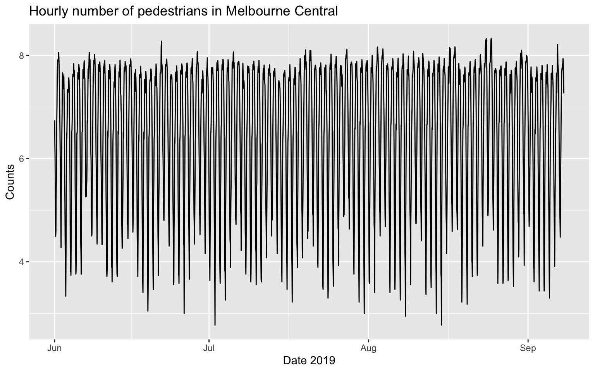
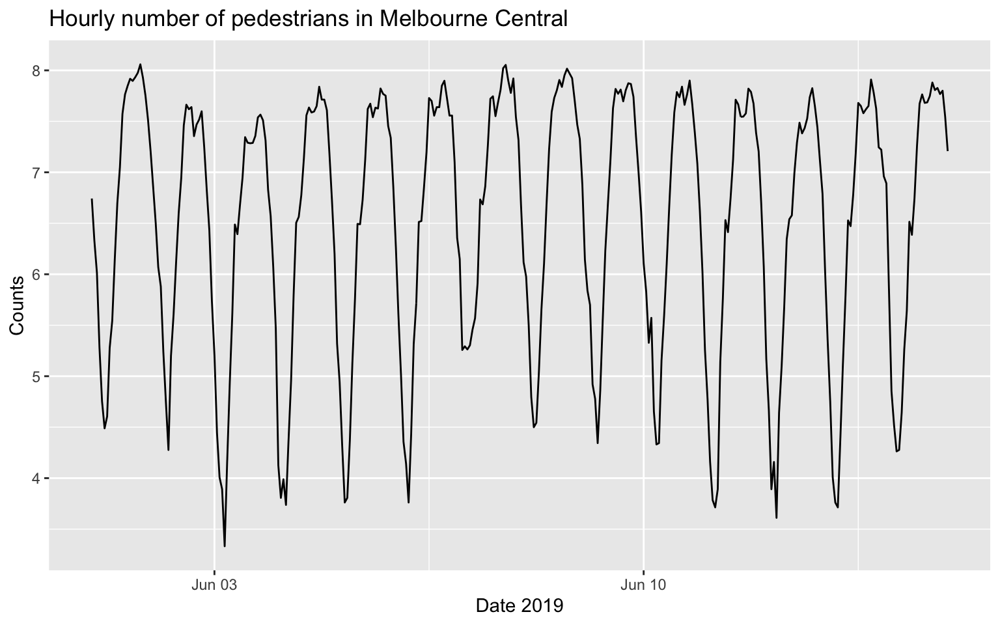
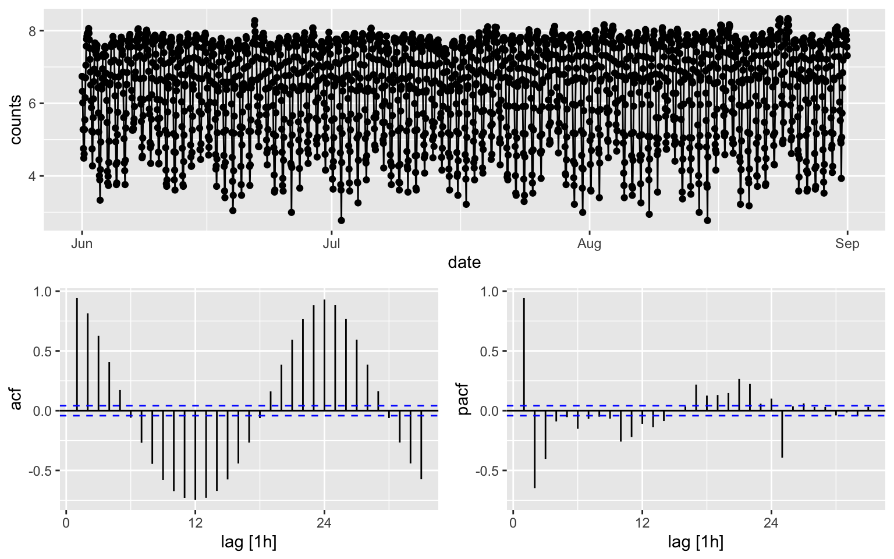
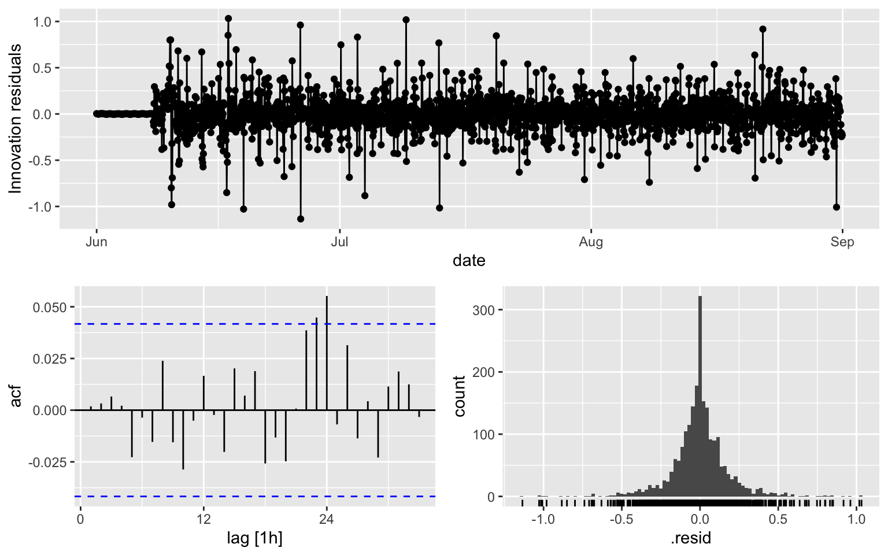
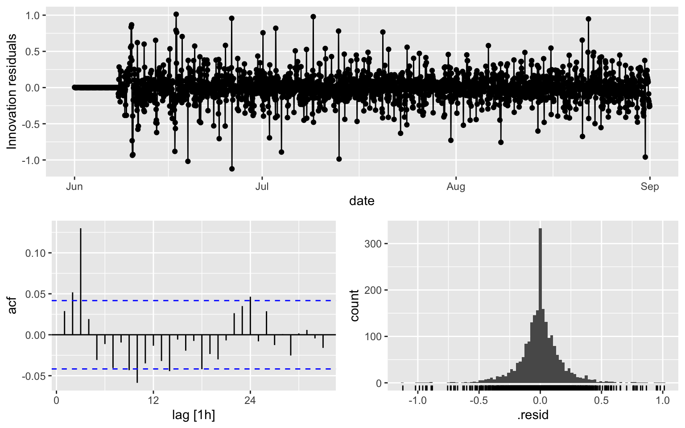
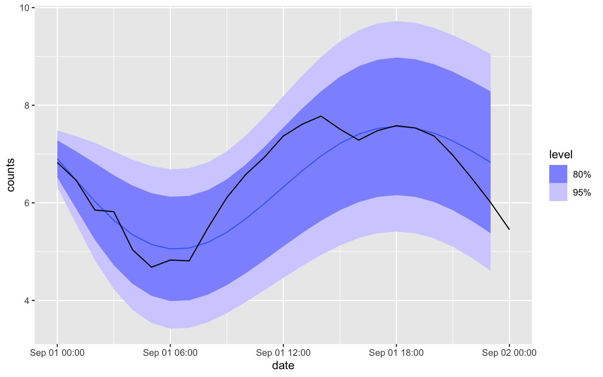
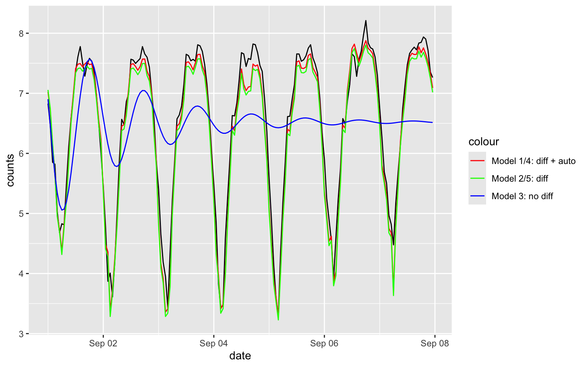

Week 2: CBD Pedestrian Example for ARIMA Models
1 Dataset
See slides on Chapter 7 for the background.
library(tidyverse) # read_csv
library(fpp3)
library(ggplot2)
library(dplyr)
library(tsibble)
library(fable)- Here, index
- 1:2208: training
- 2209:2376: testing
load("datasets/melb_sel.Rdata")
head(melb_sel)
## For the whole dataset
autoplot(melb_sel, counts) +
labs(x = 'Date 2019', y = 'Counts', title = 'Hourly number of pedestrians in Melbourne Central')
## For the first two weeks
autoplot(melb_sel[1:336, ], counts) +
labs(x = 'Date 2019', y = 'Counts', title = 'Hourly number of pedestrians in Melbourne Central')
## # A tsibble: 6 x 2 [1h] <UTC>
## date counts
## <dttm> <dbl>
## 1 2019-06-01 00:00:00 6.74
## 2 2019-06-01 01:00:00 6.33
## 3 2019-06-01 02:00:00 6.01
## 4 2019-06-01 03:00:00 5.28
## 5 2019-06-01 04:00:00 4.75
## 6 2019-06-01 05:00:00 4.492 ARIMA
First, we test whether the dataset is stationary. As you can see, KPSS fails to reject null hypothesis, meaning the dataset is stationary. Although it is stationary, I will still consider a weekly difference + a lag 1 difference.
melb_sel[1:2208, ] %>% features(counts, unitroot_kpss)## # A tibble: 1 × 2
## kpss_stat kpss_pvalue
## <dbl> <dbl>
## 1 0.0677 0.1melb_sel[1:2208, ] %>% features(counts, unitroot_ndiffs)## # A tibble: 1 × 1
## ndiffs
## <int>
## 1 0melb_sel[1:2208, ] %>% gg_tsdisplay(plot_type = "partial", y = counts) ``The p-value is reported as 0.01 if it is less than 0.01, and as 0.1 if it is greater than 0.1.”
Although the counts is stationary, I will still consider a weekly difference + a lag 1 difference.
# To determine the seasonal differencing.
melb_sel[1:2208, ] %>% features(counts, unitroot_nsdiffs)## # A tibble: 1 × 1
## nsdiffs
## <int>
## 1 1melb_sel$diff_week <- difference(melb_sel$counts, lag=168) %>% difference(lag = 1)
melb_sel[170:2208, ] %>% features(diff_week, unitroot_kpss)## # A tibble: 1 × 2
## kpss_stat kpss_pvalue
## <dbl> <dbl>
## 1 0.00990 0.1melb_sel[170:2208, ] %>%
gg_tsdisplay(diff_week, plot_type='partial', lag = 48)
It is hard to see which ARIMA model shall be used for the counts, while for the diff_week, a possible candidates is MA(3).
- I will build three model.
- fit1: automatic procedure for the diff_week
- fit2: MA(3) for the diff_week
- fit3: automatic procedure for the counts
2.1 Fit 1
fit1 <- melb_sel[170:2208, ] %>%
model(ARIMA(diff_week ~ PDQ(0,0,0)))
report(fit1)## Series: diff_week
## Model: ARIMA(2,0,1)
##
## Coefficients:
## ar1 ar2 ma1
## 0.4163 0.1600 -0.9743
## s.e. 0.0230 0.0229 0.0066
##
## sigma^2 estimated as 0.03655: log likelihood=481.18
## AIC=-954.35 AICc=-954.33 BIC=-931.87ACF is over the threshold limits at lag = 24.
fit1 %>% gg_tsresiduals()augment(fit1) %>% features(.innov, ljung_box, lag = 10, dof = 3)## # A tibble: 1 × 3
## .model lb_stat lb_pvalue
## <chr> <dbl> <dbl>
## 1 ARIMA(diff_week ~ PDQ(0, 0, 0)) 5.10 0.6472.2 Fit 2
fit2 <- melb_sel[170:2208, ] %>%
model(ARIMA(diff_week ~ pdq(0,0,3) + PDQ(0,0,0)))
report(fit2)## Series: diff_week
## Model: ARIMA(0,0,3)
##
## Coefficients:
## ma1 ma2 ma3
## -0.5675 -0.1087 -0.2156
## s.e. 0.0221 0.0278 0.0213
##
## sigma^2 estimated as 0.03765: log likelihood=451.06
## AIC=-894.11 AICc=-894.09 BIC=-871.63ACF is over the thereshold at multiple lags
fit2 %>% gg_tsresiduals()augment(fit2) %>% features(.innov, ljung_box, lag = 10, dof = 3)## # A tibble: 1 × 3
## .model lb_stat lb_pvalue
## <chr> <dbl> <dbl>
## 1 ARIMA(diff_week ~ pdq(0, 0, 3) + PDQ(0, 0, 0)) 59.4 2.03e-102.3 Fit 3
fit3 <- melb_sel[1:2208,] %>%
model(ARIMA(counts ~ PDQ(0,0,0)))
report(fit3)## Series: counts
## Model: ARIMA(2,0,3) w/ mean
##
## Coefficients:
## ar1 ar2 ma1 ma2 ma3 constant
## 1.8728 -0.9432 -0.6946 0.1193 -0.2145 0.4592
## s.e. 0.0076 0.0075 0.0212 0.0271 0.0220 0.0013
##
## sigma^2 estimated as 0.08785: log likelihood=-447.11
## AIC=908.21 AICc=908.26 BIC=948.11ACF is over the thereshold at multiple lags
fit3 %>% gg_tsresiduals()
augment(fit3) %>% features(.innov, ljung_box, lag = 10, dof = 3)## # A tibble: 1 × 3
## .model lb_stat lb_pvalue
## <chr> <dbl> <dbl>
## 1 ARIMA(counts ~ PDQ(0, 0, 0)) 122. 0- Fit 1 appears to be the best, although there are still some
problems. Here is my personal opinion
- In the real-world dataset, the result is often not as good as the example in the book (e.g. Central African Republic exports in Cp 9.7)
- lag = 24 means some daily seasonality: maybe fixable with another difference with (lag = 24).
3 Seasonal ARIMA
- I will consider the following model
- fit4: (2,1,1)(0,1,0)\(_{168}\) for the counts, it is the same model as fit1
- fit4: (0,1,3)(0,1,0)\(_{168}\) for the counts, it is the same model as fit2
- fit5: automatic selection for ( ,1, )(,1, )\(_168\) for the counts
3.1 Fit 4
\(\phi\)’s and \(\theta\)s are the same as Fit 1, but AIC, BIC and AICc are different.
fit4 <- melb_sel[1:2208, ] %>%
model(ARIMA(counts ~ pdq(2,1,1) + PDQ(0,1,0, period = 168)))
report(fit4)## Series: counts
## Model: ARIMA(2,1,1)(0,1,0)[168]
##
## Coefficients:
## ar1 ar2 ma1
## 0.4163 0.1600 -0.9743
## s.e. 0.0230 0.0229 0.0066
##
## sigma^2 estimated as 0.03655: log likelihood=477.25
## AIC=-946.5 AICc=-946.48 BIC=-924.02fit4 %>% gg_tsresiduals()
augment(fit4) %>% features(.innov, ljung_box, lag = 10, dof = 3)## # A tibble: 1 × 3
## .model lb_stat lb_pvalue
## <chr> <dbl> <dbl>
## 1 ARIMA(counts ~ pdq(2, 1, 1) + PDQ(0, 1, 0, period = 168)) 5.46 0.6043.2 Fit 5
fit5 <- melb_sel[1:2208, ] %>%
model(ARIMA(counts ~ pdq(0,1,3) + PDQ(0,1,0, period = 168)))
report(fit5)## Series: counts
## Model: ARIMA(0,1,3)(0,1,0)[168]
##
## Coefficients:
## ma1 ma2 ma3
## -0.5675 -0.1087 -0.2156
## s.e. 0.0221 0.0278 0.0213
##
## sigma^2 estimated as 0.03765: log likelihood=447.13
## AIC=-886.26 AICc=-886.24 BIC=-863.78fit5 %>% gg_tsresiduals()
augment(fit5) %>% features(.innov, ljung_box, lag = 10, dof = 3)## # A tibble: 1 × 3
## .model lb_stat lb_pvalue
## <chr> <dbl> <dbl>
## 1 ARIMA(counts ~ pdq(0, 1, 3) + PDQ(0, 1, 0, period = 168)) 64.0 2.37e-113.3 Fit 6
## The following codes take quite a while to run
#fit6 <- melb_sel[1:2208, ] %>%
# model(ARIMA(counts ~ pdq(,1,) + PDQ(,1,, period = 168)))
#report(fit6)
#fit6 %>% gg_tsresiduals()
#augment(fit6) %>% features(.innov, ljung_box, lag = 10, dof = 3)4 Forecasting
There is a function in the package to do the forecasting
forecast(fit3, h = 24) %>%
autoplot(melb_sel[2209:2233,])
I will not recommend you to use Fit1/Fit2 for the forecasting the counts, since it is difficult to transform the prediction interval. Instead, using the corresponding seasonal-ARIMA model if you can.
MSE
H = 24*7
idx = 2209:(2208 + H)
tmp3 = forecast(fit3, h = H)
tmp4 = forecast(fit4, h = H)
tmp5 = forecast(fit5, h = H)
#tmp6 = forecast(fit6, h = H)
MSE3 = mean((tmp3$.mean - melb_sel$counts[idx])^2)
MSE4 = mean((tmp4$.mean - melb_sel$counts[idx])^2)
MSE5 = mean((tmp5$.mean - melb_sel$counts[idx])^2)
#MSE6 = mean((tmp6$.mean - melb_sel$counts[idx])^2)
c(MSE3, MSE4, MSE5)## [1] 1.32308207 0.05927945 0.08740256The plots
melb_sel$tf3 = NA
melb_sel$tf4 = NA
melb_sel$tf5 = NA
melb_sel$tf3[idx] = tmp3$.mean
melb_sel$tf4[idx] = tmp4$.mean
melb_sel$tf5[idx] = tmp5$.mean
ggplot(data = melb_sel[idx, ], aes(x = date, y = counts)) + geom_line() +
geom_line(aes(x = date, y = tf4, color = "Fit 1/4: diff + auto")) +
geom_line(aes(x = date, y = tf5, color = "Fit 2/5: diff")) +
geom_line(aes(x = date, y = tf3, color = "Fit 3: no diff")) +
scale_color_manual(name = "colour", values = c("Fit 1/4: diff + auto" = "red", "Fit 2/5: diff" = "green", "Fit 3: no diff" = "blue"))
5 Automatic Procedure
fitX <- melb_sel[1:2208, ] %>%
model(ARIMA(counts ~ pdq(,1,) + PDQ(0,1,0, period = 168)))
report(fitX)## Series: counts
## Model: ARIMA(2,1,1)(0,1,0)[168]
##
## Coefficients:
## ar1 ar2 ma1
## 0.4163 0.1600 -0.9743
## s.e. 0.0230 0.0229 0.0066
##
## sigma^2 estimated as 0.03655: log likelihood=477.25
## AIC=-946.5 AICc=-946.48 BIC=-924.02fitY <- melb_sel[1:2208, ] %>%
model(ARIMA(counts ~ pdq(,0,) + PDQ(0,1,0, period = 168)))
report(fitY)## Series: counts
## Model: ARIMA(3,0,1)(0,1,0)[168]
##
## Coefficients:
## ar1 ar2 ar3 ma1
## 1.3945 -0.2491 -0.1534 -0.9568
## s.e. 0.0266 0.0377 0.0230 0.0145
##
## sigma^2 estimated as 0.03637: log likelihood=487.43
## AIC=-964.85 AICc=-964.83 BIC=-936.75